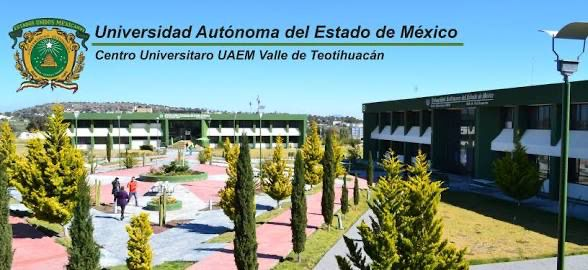
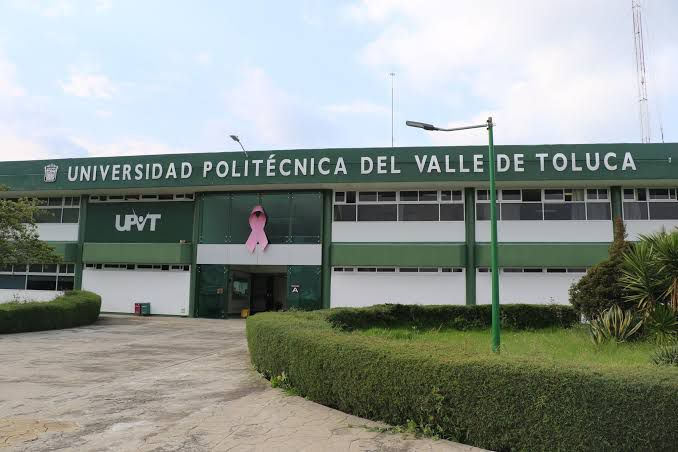
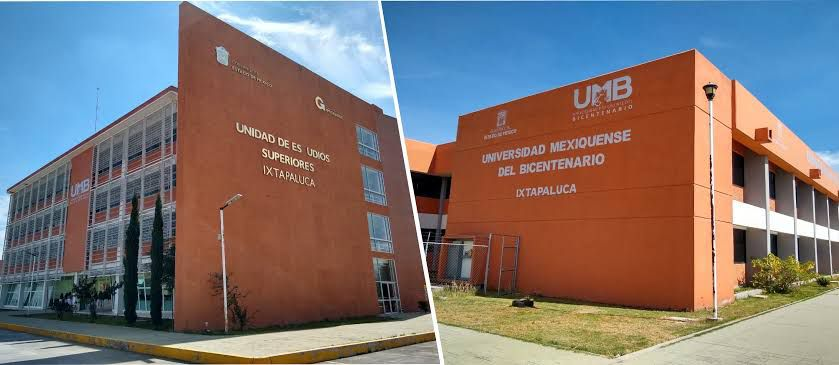
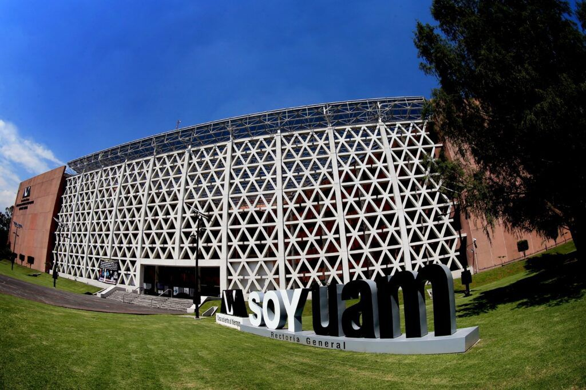
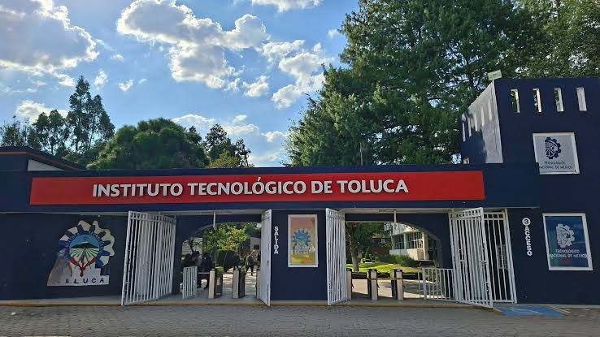

Encuentra tu mejor opción en el Estado de México
Esta página web tiene como propósito orientar a los estudiantes sobre diferentes opciones de universidades públicas en el Estado de México, brindando información básica que les permita conocer sus características y tomar una mejor decisión sobre su futuro académico.
La educación es fundamental para el desarrollo personal y social, ya que permite adquirir conocimientos, habilidades y valores necesarios para enfrentar los retos de la vida, mejorar la calidad de vida y contribuir al progreso de la sociedad.

La Universidad Autónoma del Estado de México es una institución pública reconocida por su calidad académica y amplia oferta educativa. Ofrece licenciaturas, maestrías y doctorados en diversas áreas del conocimiento, destacando por su enfoque en la formación integral, la investigación y el compromiso social.




El Tecnológico de Toluca es una institución pública que forma parte del sistema de institutos tecnológicos de México. Se enfoca en la formación de ingenieros y profesionistas en áreas tecnológicas, promoviendo la innovación, el desarrollo científico y la vinculación con la industria.